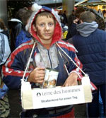

|
Multivisionsshow "Himalaya - das Geheimnis der Goldenen Tara"
1 Euro je Eintrittskarte für tdh-Projekt in Nepal
|
Am Freitag abend findet um 20 Uhr in der Wörtelhalle Kuppenheim eine Multivisionsshow mit dem bekannten Reisejournalist Dieter Glogowski statt. Veranstalter ist der Fotoclub Kuppenheim.
Eine atemberaubende Reise durch Ladakh, Zanksar, Nepal, Dharamsala, Südindien, Nepal, Bhutan, Sikkim, Tibet zum heiligsten Berg der Tibeter: dem Mt. Kailash.
16. Dezember 2002: „Im Briefkasten finde ich einen Luftpostbrief, ich erkenne die Handschrift meines alten Freundes Sonam Yospel, einem 95 jährigen Mönch aus dem Kloster Lingshed in Ladakh. Er bittet mich zum ihm zu kommen, schreibt von einem großen Geheimnis, braucht meine Hilfe.“
Mit diesem Brief beginnt für den Fotojournalisten Dieter Glogowski eine atemberaubende, zweijährige Odyssee durch alle Länder des Himalaya.
Damals, vor 40 Jahren, in den Wirren der Kulturrevolution, sollte Sonam Yospel eine kleine goldene Tara-Statue aus dem zerstörten Kloster Ganden in Tibet ins Innere des Mandalas, zum Mt. Kailash, bringen. Auf halben Weg von chinesischen Soldaten verhaftet, verlor sich für ihn die Spur der Goldenen Tara.
Dieter Glogowski begann zu recherchieren. Er reist im eisigen Winter nach Zanskar, ins tropische Südindien der tibetischen Kolonien, weiter nach Dharamsala zum 14.Dalai Lama, danach im strömenden Monsun zu Nepals heiligen Seen in Gosaikunde, findet eine heisse Spur in Bhutan und Gewissheit in Sikkim. Endlich weiss er wo er suchen muss. Über Lhasa erreicht Glogowski den Manasarova-See im Westen Tibets,......und betritt in 6.000 Meter Höhe in der Südwand des Mt.Kailash das „Innere des Mandalas“, eine Region, die kaum ein westlicher Reisender vorher betreten hat.
Produktionszeit: fast 3 Jahre, 18 Reisen in dieser Zeit in den Himalaya, über 1.800 belichtete Filme = 70.000 Dias
Weitere Informationen:
|
terre des hommes-Aktion »Straßenkind für einen Tag«
Schirmherrin ist die TV-Moderatorin Barbara Schöneberger
|
|
Bereits zum achten Mal veranstaltet das entwicklungspolitische Kinderhilfswerk terre des hommes seinen Aktionstag »Straßenkind für einen Tag«. Um auf die Situation von Straßenkindern aufmerksam zu machen, schlüpfen Kinder in Deutschland und der Schweiz für einen Tag in deren Rolle: Sie putzen Schuhe, waschen Autoscheiben und sammeln dabei Spenden für Straßenkinderprojekte. Anlass für den Aktionstag ist der Geburtstag der UN-Kinderrechtskonvention, die am 20. November 1989 unterzeichnet wurde. Die Schirmherrschaft für die Aktion hat die TV-Moderatorin Barbara Schöneberger übernommen.
Mehr als 30 Millionen Kinder in aller Welt leben auf der Straße. Wesentliche Rechte, die laut UN-Konvention jedem Kind zustehen, werden ihnen vorenthalten: Straßenkinder haben keine Chance, zur Schule zu gehen; oft werden sie Opfer von Willkür, Gewalt und sexuellem Missbrauch. terre des hommes fördert Schutzzentren für Straßenkinder in Afrika, Asien und Lateinamerika.
In vielen deutschen Städten nehmen Schulklassen, terre des hommes-»Kinderrechts-Teams« und ehrenamtliche Arbeitsgruppen an dem Aktionstag teil. Barbara Schöneberger zeigte sich von der Idee sehr angetan: »Es gefällt mir, dass Kinder hier für ihre eigenen Rechte und für ihre Altersgenossen in armen Ländern auf die Straße gehen.« Die Schirmherrin des Aktionstages hat in diesem Jahr terre des hommes-Projekte für Straßenkinder in Indien besucht. »Auf der Reise ist mir klar geworden, welche Bedeutung es für diese Kinder hat, Schutz und Unterricht zu erhalten und Verantwortung für sich und andere zu übernehmen«, erklärte die TV-Moderatorin.
Zur Begleitung des Aktionstages »Straßenkind für einen Tag« stellt terre des hommes Unterrichtsmaterialien zur Verfügung, damit die Aktion in den Schulen vor- und nachbereitet werden kann.
Die Aktion »Straßenkind für einen Tag« wurde von der UN-Dekade »Bildung für nachhaltige Entwicklung« als vorbildlich ausgezeichnet.
zur Homepage »Straßenkind für einen Tag« |
Herbstbasar mit vielfältigem Angebot hilft Grundschulzentrum in Burkina Faso
|
Vorweihnachtliche Stimmung in der Wörtelhalle bringt 8.100 Euro Erlös
Neun Meter Apfelstrudel, über 50 Kuchen, viele Kilo Ton und Knetteig, unzählige vorgefertigte Nikolaussäckchen und eine große Schar von Freiwilligen sowie Besuchern trugen am Sonntag dazu bei, dass ein Stück Erde in Afrika menschlicher wird. Mit dem Erlös des Herbstbasars der „terre des hommes“ Arbeitsgruppe Murgtal / Mittelbaden wird im Grundschulzentrum Dafino in Burkina Faso der Schulunterricht für viele Kinder gesichert sein.
Weiterlesen
(Bericht, Fotos, Projektinfos und Sponsorenliste)
|
Nationaler Notstand in Guatemala
Hilfe für 333 betroffene Familien
|
Die mehrtägigen, schweren Regenfälle in Guatemala haben zu starken Überschwemmungen und Erdrutschen geführt. Stromversorgung, Telekommunikation und Straßenverbindungen wurden unterbrochen. Am schwersten betroffen sind die südwestlichen Landesteile. Die Regierung hat den nationalen Notstand ausgerufen. Die Folgen dieser Katastrophe werden als möglicherweise schwerer als durch den Hurrikan Mitch eingeschätzt. Offizielle Stellen sprechen von mehr als 100.000 Menschen, die evakuiert worden sind. Die Zahl der Toten oder Vermissten steht noch nicht fest, man rechnet jedoch mit einigen tausend. Die staatliche Verwaltung und die zuständigen Behörden haben sehr wenig koordiniert auf die Katastrophe reagiert. Die Betroffenen wurden nicht in die Planung der Hilfsmaßnahmen einbezogen. Entlegene Landesteile werden kaum erreicht. In den Medien und der Bevölkerung wird starke Kritik laut.
terre des hommes unterstützt Soforthilfemaßnahmen in den Gemeinden Quetzaltenango und San Martín mit 14.600 Euro. Hiermit wird die Verteilung von Hilfsgütern für 333 Familien (1.665 Personen) gesichert. Diese gehören mehrheitlich der indigenen Minderheit der Mam an, die in dieser Region siedelt. terre des hommes arbeitet mit der Organisation FUNDAMAM zusammen, die vor dem Hurrikan in der Region Projekte mit Bauernfamilien und Jugendlichen durchführte.
Die vorgesehenen Maßnahmen sind:
Die Unterstützung der betroffenen Bevölkerung bei der Lösung der durch den Hurrikan verursachten Probleme und die Versorgung mit dringend benötigten Hilfsgütern stehen im Vordergrund. Dabei sollen die Menschen auch in die Lage versetzt werden, sich selbst zu helfen.
Zunächst werden die betroffenen Familien mit den notwendigen Hilfsgütern versorgt: Sie erhalten Mais, Bohnen, Reis und Zucker, außerdem Trinkwasser, Material für Notunterkünfte und medizinische Betreuung. Auch eine psychologische Unterstützung der traumatisierten Opfer wird in Zusammenarbeit mit anderen Organisationen gewährleistet.
Dabei sollen möglichst die betroffenen Gemeinden intensiv bei der Planung und Umsetzung der Hilfsmaßnahmen einbezogen werden. Dadurch soll auch die Organisationsfähigkeit der Gemeinden in Notsituationen verbessert werden.
Bitte unterstützen Sie unsere Arbeit. Vielen Dank. |
Aktionen für gerechten Welthandel
|
Im Dezember 2005 steht die nächste Welthandelskonferenz an. In Hongkong sollen neue Welthandelsregeln vereinbart werden. Für die Entwicklungsländer steht dabei viel auf dem Spiel: Noch mehr Armut und Entmutigung oder ein Hoffnungsschimmer, dass es besser wird. Aber auch der Umweltschutz droht ein weiteres Mal Opfer der WTO zu werden. Um die WTO zu stoppen, braucht es eine weltweite Gegenbewegung. Aber natürlich können nicht alle nach Hong-Kong fahren, um den Protest dort auf die Straße zu tragen. Deswegen gibt es zwei Online-Aktionen und einen weltweiten Aktionstag:
Mails an die zuständigen deutschen MinisterInnen:
eMails schreiben an die designierten MinisterInnen für Wirtschaft, Landwirtschaft, Entwicklung und Umwelt. http://www.gerechtigkeit-jetzt.de/
Online-Demo
... ist eine der Möglichkeiten, zu zeigen, wie groß und breit der Protest gegen die Liberalisierungspolitik der WTO ist. Dabei kann man sein Foto und einen Slogan auf eine Aktions-Homepage stellen.
http://www.attac.de/wto/hongkong.php
Aktionstag »White Band Day«
Beim dritten »White Band Day«, dem globalen Aktionstag am 10. Dezember, werden wieder weltweit Weiße Bänder sichtbar sein. Drei Tage vor der WTO-Ministerkonferenz in Hongkong rückt die weltweite Aktion gegen Armut das Thema »Gerechter Welthandel« in den Mittelpunkt.
http://www.weltweite-aktion-gegen-armut.de/aktiv_wbd.html
http://www.attac.de/wto/hk-aktionstag.php |
Hintergrund
Vulkanausbruch und Hurrikan in El Salvador
|
Anfang Oktober trafen in El Salvador zwei Naturphänomene zusammen, die zu einem nationalen Notstand führten. Der Vulkan Ilamatepec brach aus, ca. 50 km von der Hauptstadt San Salvador entfernt. Bei dem Ausbruch wurden Asche und Gesteinsbrocken ausgestoßen. Die Asche kam als saurer Regen herunter und verursachte zusammen mit den Steinen und Schlammlawinen große Schäden in der Landwirtschaft, an Straßen, Häusern und in den Plantagen. Zeitgleich fegte der Hurrikan Stan, der starke Regenfälle mit sich führte, über das Land. Der immense Regen löste Erdrutsche und Überschwemmungen aus und forderte zahlreiche Todesopfer.
Insgesamt wurden mindestens 70.000 Menschen in Notunterkünften evakuiert. Viele der Evakuierungen sind Initiativen von Kirchen und Stadtverwaltungen. Die Unterstützung seitens der staatlichen Institutionen hat vielerorts nicht funktioniert. Ähnlich wie nach der Mitch-Katastrophe hat sich gezeigt, dass die Verteilung von HIlfsgütern oft an parteipolitischen Kriterien und nicht an die Bedürftigkeit der Menschen orientiert ist.
In El Salvador hilft terre des hommes den Überlebenden des Tropensturms Stan und des Vulkanausbruchs mit 21.000 Euro. Hiermit sollen Hilfsgüter für 382 evakuierte Familien (ca. 1.910 Personen) bereitgestellt werden.
terre des hommes kooperiert dabei mit drei einheimischen Partnerorganisationen, mit denen mehrheitlich auch nach der Mitch-Katastrophe 1998 und dem Erdbeben 2001 zusammengearbeitet wurde: Asociación CORDES, Asociación Las Dignas und die Pfarrei San Isidro. Die Soforthilfe kommt den Familien in den Gemeinden Santa Tecla, Tecoluca und Izalco zugute.
Das Gebiet um Santa Tecla ist besonders betroffen. Viele Straßenverbindungen sind nach wie vor beschädigt. Zahlreiche Familien wurden evakuiert und in Notunterkünften untergebracht. Die schon vor der Notlage armen Familien haben ihre Existenzgrundlage verloren.
In Tecoluca am Lempa-Fluss haben die Regenfälle und ein Deichbruch große Überschwemmungen verursacht. Der Landweg zu vielen Gemeinden ist nach wie vor unterbrochen. Das Wasser hat nicht nur viele Häuser, sondern auch praktisch die gesamte erntereife Mais- und Bohnenernte zerstört. Inzwischen sind viele Familien in ihre Gemeinden zurückgekehrt, wenngleich viele Häuser noch nicht wieder bewohnbar sind. Die Menschen bleiben deshalb auf Notunterkünfte und Gemeinschaftsküchen angewiesen.
In der Pfarrei von Izalco sind über 100 Personen untergebracht. Sie haben bisher keine Unterstützung durch den Staat erhalten. Derzeit ist nicht abzusehen, wann die Familien die Pfarrei verlassen können. In ihre Häuser in unmittelbarer Nähe des Kraterrands können sie nicht zurück: Fast alle Häuser dort sind verbrannt, zudem ist mit weiteren Eruptionen zu rechnen. In allen drei Gebieten sind die Familien ihrer Ernährungsgrundlage beraubt.
Die terre des hommes-Soforthilfe sieht vor, dass 382 Familien für die nächsten zwei Monate mit notwendigen Hilfsgütern versorgt werden. Dies sind in erster Linie Lebensmittel und Hygieneartikel, die vor Ort eingekauft und an die Familien verteilt werden. Alle Familien sollen vorerst außerhalb von Risikozonen wohnen bleiben. Voraussetzung dafür ist, dass umgehend sanitäre Einrichtungen in den Notunterkünften installiert werden. Als Unterstützung bei der Versorgung mit Nahrungsmitteln werden die Gemeinschaftsküchen der Notunterkünfte von den Partnerorganisationen betreut.
Bitte unterstützen Sie unsere Arbeit. Vielen Dank. |
Regierungsbildung als Chance für die Entwicklungszusammenarbeit nutzen!
|
Die neue Bundesregierung ist gefordert, entschlossen Zeichen gegen Armut und Ausbeutung zu setzen und der Entwicklungspolitik im nächsten Kabinett einen höheren Stellenwert zu verschaffen. Dies betonten die Hilfsorganisationen terre des hommes und Deutsche Welthungerhilfe anlässlich der Vorstellung ihres 13. Berichtes zur Wirklichkeit der Entwicklungshilfe.
»Die Glaubwürdigkeit der Bundesregierung wird auch daran zu messen sein, ob sie zu ihren internationalen Zusagen steht und die Mittel für die Entwicklungspolitik aus den Sparpaket-Debatten heraushält«, erklärte Wolf-Christian Ramm, Pressesprecher von terre des hommes. Er begrüßte, dass Deutschland dem verbindlichen Zeitplan der Vereinten Nationen zugestimmt habe, bis 2015 0,7 Prozent des Bruttonationaleinkommens für Entwicklungszusammenarbeit aufzuwenden. Der Weg dorthin sei allerdings nicht leicht: »2004 lagen die Ausgaben für die Entwicklungshilfe bei gerade einmal 0,28 Prozent und beliefen sich damit auf nicht einmal 1,5 Prozent des Bundeshaushaltes«, so Ramm. Die leichte Erhöhung der Ausgaben auf knapp 7,5 Milliarden US-Dollar sei nur auf den Anstieg des Euro-Kurses gegenüber dem Dollar zurückzuführen. Wechselkursbereinigt seien die deutschen Leistungen 2004 sogar leicht rückläufig. In diesem Stil werde die Einhaltung der feierlich formulierten internationalen Verpflichtungen nicht gelingen.
Ramm appellierte an die neue Bundesregierung, die Entwicklungspolitik auch inhaltlich aufzuwerten. Dazu gehöre das Eintreten für gerechte Welthandelsbedingungen, der Abbau von Agrarsubventionen und ein weitergehender Schuldenerlass für die am höchsten verschuldeten Entwicklungsländer.
Knapp ein Jahr nach der Tsunami-Katastrophe zogen Deutsche Welthungerhilfe und terre des hommes eine gemischte Bilanz der Hilfe für Südostasien. Die rasche Reaktion der Bundesre-gierung und die Bereitstellung von 500 Millionen Euro an Not- und Wiederaufbauhilfe sei zwar zu begrüßen, so der Generalsekretär der Deutschen Welthungerhilfe, Hans-Joachim Preuß: »Es muss sich dabei jedoch um zusätzliche Mittel handeln.« Er kritisierte, dass nur fünf Prozent der Sondermittel nichtstaatlichen Organisationen zur Verfügung gestellt wurden: »Diese Entscheidung ist unverständlich angesichts der Tatsache, dass zivilgesellschaftliche Träger Notleidende häufig schneller, basisnäher und unparteiischer erreichen können als staatliche Strukturen und Organisationen der Vereinten Nationen.«
Die eigentliche Herausforderung für die Entwicklungshilfe seien aber die »stillen Tsunamis«, die sich weltweit täglich ereigneten. »Viele tausend Menschen sterben jeden Tag durch Hunger und Krankheiten wie Aids, Tuberkulose und Malaria«, sagte Preuß. Die neue Bundesregierung müsse daher auch die Finanzierung struktureller Armutsbekämpfung sicher stellen.
Download des 13. Berichts zur Wirklichkeit der Entwicklungshilfe als PDF-Dokument |
Fünfter Social Watch Deutschland Report vorgelegt
Handeln statt Versprechen
|
Regierungsorganisationen fordern mehr Anstrengungen zur Verwirklichung weltweiter sozialer Gerechtigkeit und zur Bekämpfung von Armut
Zehn Jahre nach dem Weltgipfel für soziale Entwicklung in Kopenhagen und fünf Jahre nach dem Millenniumsgipfel der Vereinten Nationen ist die Welt noch immer sehr weit davon entfernt, die bei beiden Weltkonferenzen verabredeten Ziele zu erreichen. Zwar konnte Armut in einigen Ländern und Regionen zurück gedrängt werden, doch in vielen Ländern nahm Armut zu. Weltweit wuchs die Kluft zwischen arm und reich. Hierauf verweist Social Watch Deutschland mit seinem fünften Bericht über weltweite soziale Entwicklungen, der am 21. Oktober 2005 in Bonn der Öffentlichkeit vorgestellt wurde.
»Die großen Versprechen zur Armutsbekämpfung wurden bisher nur sehr unzureichend in konkretes Handeln umgesetzt. Daher fordert das internationale Netzwerk Social Watch die Regierungen auf, die Anstrengungen zu verstärken, um in ihren Ländern und weltweit soziale Ungerechtigkeit zu bekämpfen«, erklärte Klaus Heidel, Sprecher von Social Watch Deutschland. »Vor allem in Afrika südlich der Sahara hat sich die Situation verschlechtert. Dort leben heute 140 Millionen mehr Menschen in absoluter Armut als 1990«, so Heidel weiter, der darauf hinwies, dass selbst in Deutschland noch nicht alle Beschlüsse des Weltsozialgipfels umgesetzt worden seien, so habe sich die Situation geduldeter Flüchtlinge verschlechtert.
Angesichts dieser globalen Situation müsse in der Außen- und Entwicklungspolitik der Vorrang der Menschenrechte gelten, erklärte Pfr. Jürgen Reichel vom Evangelischen Entwicklungsdienst (EED). Der diesjährige Social Watch Report weise eindringlich darauf hin, was geschehe, »wenn internationale Organisationen wie die Welthandelsorganisationen nicht einen Funken Verständnis für die sozialen Menschenrechte mitbringen. Dann puscht eine solche Organisation Regeln durch, die Patente so erfolgreich schützen, dass bis heute kein einziges Land in der Lage gewesen ist, für die Millionen Aidskranker Generika zu importieren. Weil der Internationale Währungsfonds, um die Inflation zu senken, die Staatshaushalte deckelt, müssen Länder, die von AIDS schwer mitgenommen sind, darum kämpfen, Zuschüsse des Globalen Fonds zur Bekämpfung von AIDS, Tuberkulose und Malaria beantragen zu dürfen«, berichtete Reichel.
Zwar anerkennt Social Watch die Bemühungen Deutschlands, zur Armutsbekämpfung beizutragen. Dennoch fällt die Bilanz negativ aus. Deutschland habe »einmalige Chance vertan, zur rechten Zeit eine überzeugende Antwort vorzulegen, wie deutsche Politik zur Lösung der weltweiten Zukunftsaufgaben beitragen wird: Armutsbekämpfung, nachhaltige Entschuldung, eine gerechte Handelspolitik, ein neues internationales Ordnungssystem unter Führung der UN«, so Reichel.
Auch Geschlechtergerechtigkeit ist zehn Jahre nach dem Weltsozialgipfel und nach der 4. Weltfrauenkonferenz noch längst nicht hergestellt, und dies nicht einmal in der Europäischen Union und in Deutschland, so Sabine Gürtner vom NRO-Frauenforum. »Trotz zunehmender Teilhabe von Frauen an Bildung und Beschäftigung sind Frauen noch immer nicht gleichgestellt, wo es um soziale und wirtschaftliche Macht geht. Trotz der Jobgewinne von Frauen setzen sich markante Ungleichheitsstrukturen zwischen Frauen und Männern auf den EU-Arbeitsmärkten fort«, so Gürtner weiter.
Social Watch Deutschland/Forum Weltsozialgipfel ist ein Netzwerk von 28 entwicklungs- und sozialpolitischen Organisationen. Es wurde im Vorfeld des Weltgipfels für soziale Entwicklung gegründet. Sein Ziel ist die kritische Beobachtung der Umsetzung von sozial- und entwicklungspolitischen Beschlüssen großer Weltkonferenzen.
Download der Studie als PDF-Dokument |
terre des hommes bittet um Spenden für Mittelamerika |
Die Lage in den Katastrophengebieten in Mittelamerika ist unverändert ernst. Schätzungen belaufen sich inzwischen auf weit über 1.000 Tote und 500.000 Menschen, die obdachlos geworden sind. Nach neuen starken Regenfällen sind weiterhin viele Gegenden von der Außenwelt abgeschnitten. Das Kinderhilfswerk terre des hommes bittet dringend darum, die Nothilfemaßnahmen durch Spenden zu unterstützen.
Besonders schwierig gestalten sich die Bergungsarbeiten in Guatemala, wo es nach wie vor zu Erdrutschen kommt und viele Straßen unpassierbar sind. In vielen Dörfern fehlen Decken, Nahrungsmittel und Medikamente. Derweil mehrt sich die Kritik an der Regierung, nicht angemessen auf die Katastrophe reagiert zu haben. »Die Behörden scheinen mit der Situation überfordert«, so Ellen Krumstroh, Leiterin des Mittelamerika Büros von terre des hommes. »Wir müssen so schnell wie möglich die Gemeinden in die Lage versetzen, sich zu organisieren, damit die Menschen sich selbst helfen.«
Auch in El Salvador ist noch keine Besserung in Sicht. Betroffen ist vor allem der Großraum San Salvador, in dem Hurrikan und Vulkanausbruch viele Todesopfer forderten. Hunderte Familien sind obdachlos. »Die hohe Zahl an Toten geht darauf zurück, dass die Menschen in riskanten Gebieten siedeln, beispielsweise an Vulkanhängen. Wer sein Dorf verlassen muss und arbeitssuchend in die Stadt kommt, hat oft keine andere Wahl. Deswegen leiden die, die sowieso schon nichts haben, am meisten unter der Katastrophe«, erklärt Ellen Krumstroh. Im Moment sei es das wichtigste, die Versorgung der Opfer mit Nahrung, Medikamenten und Trinkwasser zu sichern. »Anschließend werden wir den Menschen beim langfristigen Wiederaufbau helfen und dabei, geeigneten Siedlungsraum zu finden«, so Ellen Krumstroh. »Wir bitten dringend um weitere Spenden.«
Spendenkonto 700 800 700
Volksbank Osnabrück eG
BLZ 265 900 25
Stichwort: Hurrikan
Online-Spende
|
|
|
|
 Ansprechpartner Ansprechpartner
|
|
Wolfgang Deppisch
(Projektinfos)
Tel. 07222 / 32927
Heinz Wolf
(Sponsoring, Allgemeines)
Tel. 07225 / 75543
weitere Ansprechpartner
|
|
Erlöse
1992-2012
|
|

Jahr |
Euro |
1992 |
70.000 |
1993 |
75.600 |
1994 |
83.883 |
1995 |
69.617 |
1996 |
51.412 |
1997 |
61.749 |
1998 |
60.333 |
1999 |
68.742 |
2000 |
85.492 |
2001 |
106.375 |
2002 |
78.937 |
2003 |
84.027 |
2004 |
76.662 |
2005 |
149.941 |
2006 |
84.497 |
2007 |
105.958 |
2008 |
104.053 |
2009 |
100.833 |
2010 |
107.254 |
2011 |
103.600 |
| 2012 |
158.250 |
| 2013 |
163.420 |
1977-2013 |
mehr als 2,7 Mio. € |
|
Detailansicht der Erlöszahlen |
|
|


;)